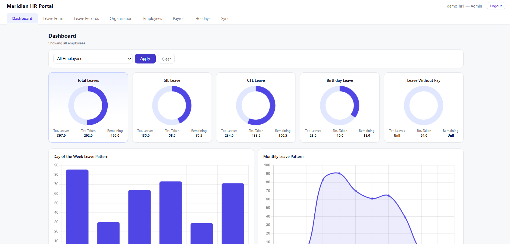
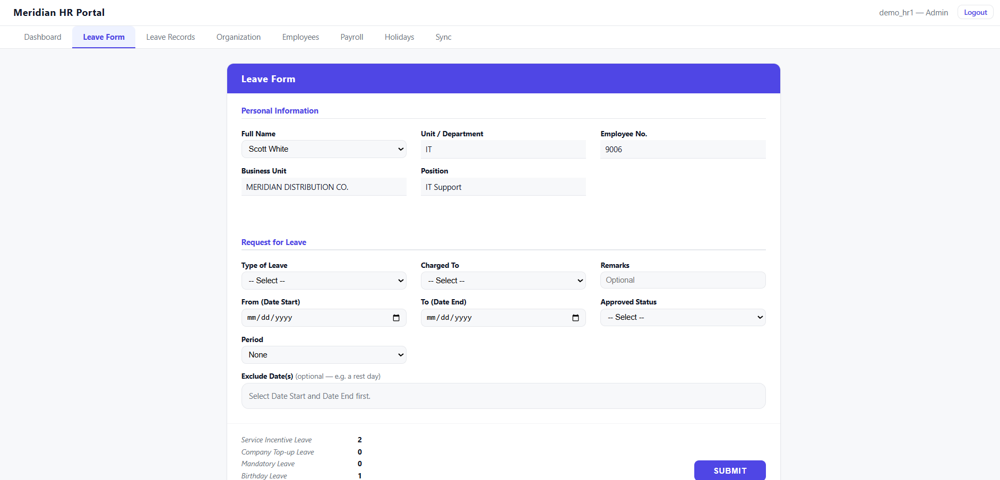
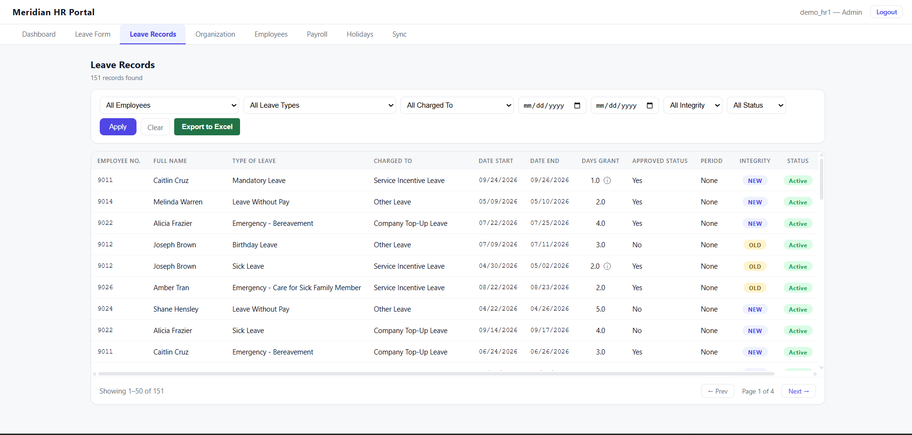
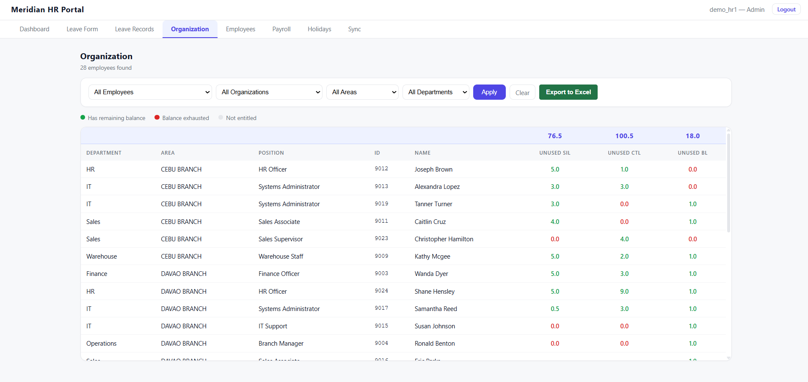
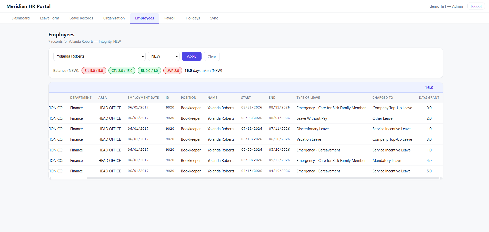
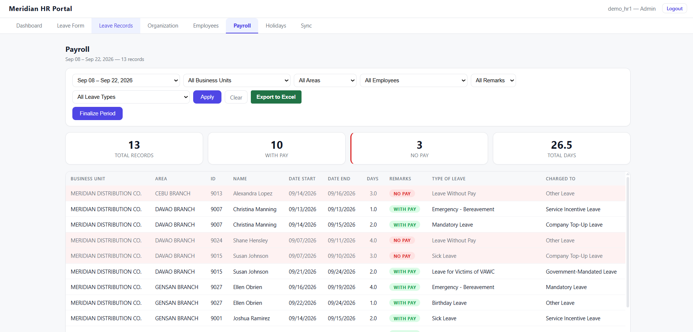

Meridian LPMS
Meridian LPMS is a full-stack web application that replaces the legacy Excel-based Leave Monitoring Tool used by the HR team. It handles leave filing, records management, organization-wide balance tracking, payroll computation, holiday management, and employee data sync — rebuilding years of accumulated Excel logic into a proper Flask and SQL Server application, then hardening it for real deployment.
HR's entire leave-tracking system lived in a single shared Excel workbook, edited simultaneously by multiple HR staff, which regularly led to overwritten changes and lost data. Payroll computation relied on a dense web of interdependent Excel formulas that were nearly impossible to audit, and at least one had been silently wrong for an unknown period, quietly miscalculating leave balances for real employees. There was also no validation layer to stop invalid data entry, and no safe way to add a forgotten holiday without risking retroactive changes to payroll that had already been paid out.
I rebuilt the system as a Flask web app backed by SQL Server, first reproducing Excel's exact calculation logic (leave entitlement brackets, the overflow between leave types, holiday-aware workday counting), then improving on what Excel couldn't structurally support: role-based access control, server-side validation, a single source of truth for data, and a "Finalize/Un-finalize Period" safeguard that protects already-paid payroll from being silently altered when a holiday is added late.
- Leave Form and Records management with full client- and server-side validation (date ranges, balance checks, valid leave type combinations, duplicate detection)
- Organization-wide and per-employee balance dashboards, computed dynamically so they're always accurate against the latest data
- A payroll engine that reproduces Excel's exact days-granted, running balance, and pay status logic, including leaves that cross a payroll period
- Dynamic holidays: adding, editing, or deleting one automatically recalculates every affected leave record, with the Finalize/Un-finalize safeguard protecting periods already paid out
- Employee sync from the HR master list, and Excel export on every major page
- Production hardening: login rate limiting, branded error pages, and a real WSGI server for genuine multi-user access
- Python
- Flask
- SQL Server (pyodbc)
- JavaScript/HTML/CSS
- pandas/openpyxl
- Flask-Limiter
- Waitress
- Git
The most educational moment came after I thought the app was finished. It worked fine in local development, but the Payroll page took over 20 seconds to load once I pointed it at a real cloud database instead of a same-machine one. The app was making 339 separate database round trips per page load, invisible locally but brutal once real network latency entered the picture. It was a clear lesson that "works fine on my machine" can hide real architectural debt that only shows up in a production-like environment. Fixing it meant batching those 339 queries down to 4, about a 15x speedup, with the numbers verified byte-for-byte against the old output before shipping.
The Excel merge-conflict problem is gone, replaced by one authoritative database instead of a fragile shared file. The app is now accessible 24/7, and payroll periods populate automatically instead of requiring HR to call me to set up the current period manually. Pages load fast across the board, unlike before, when every action triggered a full Excel recalculation and forced HR to wait seconds just to continue working. Human error is now minimal, since every entry is validated and secured. The underlying business rules and logic have also been hardened, closing the gaps that let silent errors slip through in the old system.